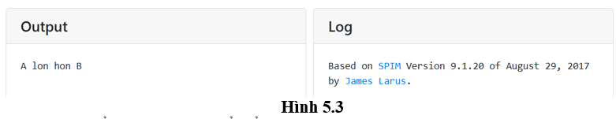
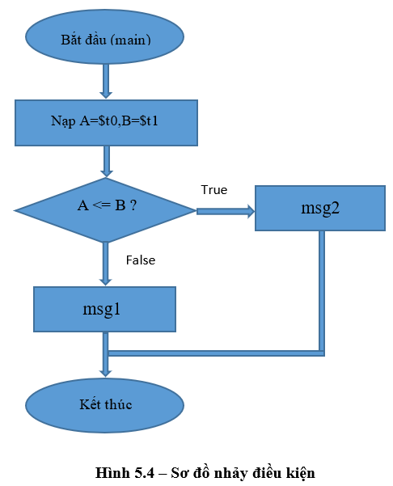

Bài thực hành Mô phỏng Hợp ngữ MIPS - JsSpim
Các bài thực hành sau đây giúp sinh viên hiểu rõ cách CPU MIPS xử lý chương trình Assembly thông qua công cụ mô phỏng trực tuyến MIPS Assembler & Simolator. Công cụ Assembler hỗ trợ viết mã và chuyển đổi lệnh MIPS thành mã máy 32-bit, trong khi Simolator mô phỏng quá trình thực thi chương trình ở cấp độ lệnh, bao gồm các bước tìm nạp, giải mã và thực thi. Nhờ giao diện trực quan, sinh viên có thể quan sát sự thay đổi của các thanh ghi và bộ nhớ theo từng bước thực hiện, từ đó nắm bắt được nguyên lý vận hành của CPU mà không cần cài đặt phần mềm chuyên dụng.
Bài 4.1 – Làm quen với JsSpim và lệnh syscall cơ bản
Mục tiêu
- Hiểu giao diện mô phỏng JsSpim.
- Sử dụng các lệnh syscall để in số, in chuỗi và nhập dữ liệu từ bàn phím.
Hướng dẫn thực hiện
- Mở trang mô phỏng: https://spimsimolator.sourceforge.net/jsSpim.html
-
Gõ mã nguồn:
.data msg: .asciiz "Nhap mot so: " .text main: li $v0, 4 la $a0, msg syscall # in chuỗi li $v0, 5 syscall # nhập số → $v0 move $t0, $v0 li $v0, 1 move $a0, $t0 syscall # in số li $v0, 10 syscall - Nhấn Run → quan sát vùng Output (Hình 5.2).

Câu hỏi ôn tập
- Thanh ghi
$v0dùng để làm gì trước mỗi syscall? - Vì sao phải gán giá trị vào
$a0khi in chuỗi?
Bài 4.2 – Cấu trúc điều kiện IF–ELSE
Mục tiêu
- Sử dụng các lệnh so sánh và nhảy có điều kiện:
beq,bne,blt,bgt.
Hướng dẫn thực hiện
-
Viết chương trình:
.data msg1: .asciiz "A lon hon B\n" msg2: .asciiz "A khong lon hon B\n" .text main: li $t0, 7 li $t1, 5 ble $t0, $t1, else # nếu t0 <= t1 → nhảy đến else li $v0, 4 la $a0, msg1 syscall # in msg1 j exit else: li $v0, 4 la $a0, msg2 syscall # in msg2 exit: li $v0, 10 syscall - Run → Quan sát vùng Output (Hình 5.3).
- Thay đổi giá trị
$t0và$t1để kiểm tra các trường hợp true/false.


Câu hỏi ôn tập
- Phân biệt
beqvàbne. - Khi nào nên dùng
jthay vìbeq?
Bài 4.3 – Vòng lặp for và tính tổng dãy số
Mục tiêu
- Viết vòng lặp for trong MIPS để tính tổng từ 1 → N.
Hướng dẫn
-
Mã chương trình:
.data n: .word 5 .text main: lw $t0, n # i (giới hạn) li $t1, 1 # sum li $t2, 0 # counter loop: add $t1, $t1, $t2 addi $t2, $t2, 1 blt $t2, $t0, loop li $v0, 1 move $a0, $t1 syscall li $v0, 10 syscall - Quan sát sự thay đổi của các thanh ghi
$t1(sum) và$t2(counter). - Vẽ sơ đồ vòng lặp:
init → loop → add → compare → branch → exit
Câu hỏi ôn tập
- Nếu điều kiện
bltđổi thànhbge, chuyện gì xảy ra? $t2và$t0đóng vai trò gì trong vòng lặp?
Bài 4.4 – Làm việc với mảng và xâu ký tự
Mục tiêu
- Duyệt mảng ký tự và in từng phần tử.
- Sử dụng syscall 11 để in ký tự.
Hướng dẫn
-
Mã chương trình:
.data str: .asciiz "HELLO" .text main: la $t0, str loop: lb $t1, 0($t0) beqz $t1, exit li $v0, 11 move $a0, $t1 syscall addi $t0, $t0, 1 j loop exit: li $v0, 10 syscall - Chạy chương trình → quan sát Output: HELLO.
Câu hỏi ôn tập
- Sự khác biệt giữa
lbvàlw. - Tại sao xâu phải kết thúc bằng ký tự 0 (NolL)?